Olive
flatworm
Tytthosoceros lizardensis*
Family
Pseudocerotidae
updated Feb 2020
Where
seen? Many of this large greenish brown flatworm are sometimes
seen at night, on coral rubble, among seaweeds and seagrasses, on some of our shores. The flatworm is named in honour of the Lizard Island Research Station in Australia.
Features: 8-10cm. Usually with deep ruffles. Body mottled brown or olive with white dots forming irregular bars perpendicular to the body edge. Margin comprises fine white outer edge with fine black inner edge. Underside
is uniformly pale with the same margins as the upper side. It has a pair of
pseudotentacles that are pointed, ear-like made up of simple folded edges of
the body, with white tips. It can swim by
undulating its body edges. |
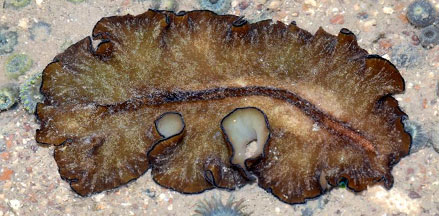
Beting Bronok, Jun 18
Photo shared by Loh Kok Sheng on facebook. |
|
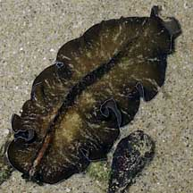
Tanah Merah, Jul 09 |
|
|
*Species are
difficult to positively identify without close examination.
On this website, they are grouped by external features for convenience of
display.
| Olive
flatworms on Singapore shores |
| Other sightings on Singapore shores |
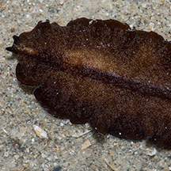
Changi, Mar 17
Photo shared by Marcus Ng on facebook. |
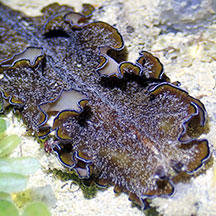
Chek Jawa, Aug 20
Photo shared by Jianlin Liu on facebook. |
|
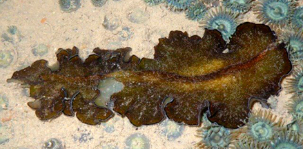
Beting Bronok, May 09
Photo shared by Loh Kok Sheng on his blog. |
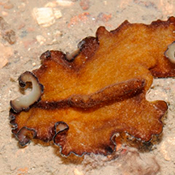
Beting Bronok, May 11
Photo shared by Loh Kok Sheng on his blog. |
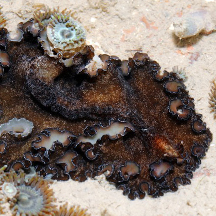
Beting Bronok, Nov 11
Photo shared by Loh Kok Sheng on his blog. |
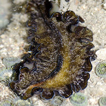
Beting Bronok, Jun 16
Photo shared by Rene Ong on facebook. |
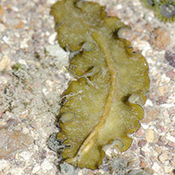
Beting Bronok, Jun 16
Photo shared by Rene Ong on facebook. |
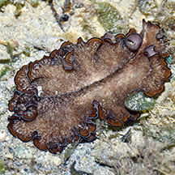
Kusu Island, Dec 18
Photo shared by Loh Kok Sheng on facebook. |
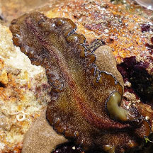
Big Sisters' Island, Feb 2024
Photo shared by Richard Kuah on facebook. |
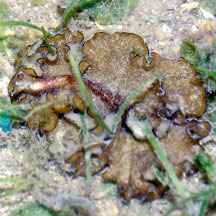
Pulau Semakau (South), Nov 24
Photo shared by Loh Kok Sheng on facebook. |
 |
 |
|
Acknowledgement
Grateful thanks to Rene Ong for sharing details and identifying the flatworms on this page.
Links
References
- Rene S.L. Ong and Samantha J.W. Tong. 29 October 2018. A preliminary checklist and photographic catalogue of polyclad flatworms recorded from Singapore. Nature in Singapore 2018 11: 77–125.
- D. M. Bolaños, B. Q. Gan & R. S. L. Ong. 29 Jun 2016. First records of pseudocerotid flatworms (Platyhelminthes: Polycladida: Cotylea) from Singapore: A taxonomic report with remarks on colour variation.(pdf) The Raffles Bulletin of Zoology Supplement No. 34: 130-169 Pp. 130-169.
- Rene S. L. Ong. 31 August 2016. Aggregation of Tytthosoceros lizardensis flatworms at Beting Bronok. Singapore Biodiversity Records 2016: 108-109.
- Rene Ong, Samantha Tong & Teresa Stephanie Tay. 13 November 2015. Marine flatworms at Seringat Kias. Singapore Biodiversity Records 2015: 182-184.
- Humann, Paul
and Ned Deloach. 2010. Reef
Creature Identification: Tropical Pacific New World Publications.
497pp.
- Newman, L.J and Cannon, L.R.G. 1996. Bulaceros, new genus, and Tytthosoceros, new genus, (Platyhelminthes: Polycladida) from the Great Barrier Reef, Australia and Papua New Guinea. The Raffles Bulletin of Zoology 44(2): 479-492.
|
|
|